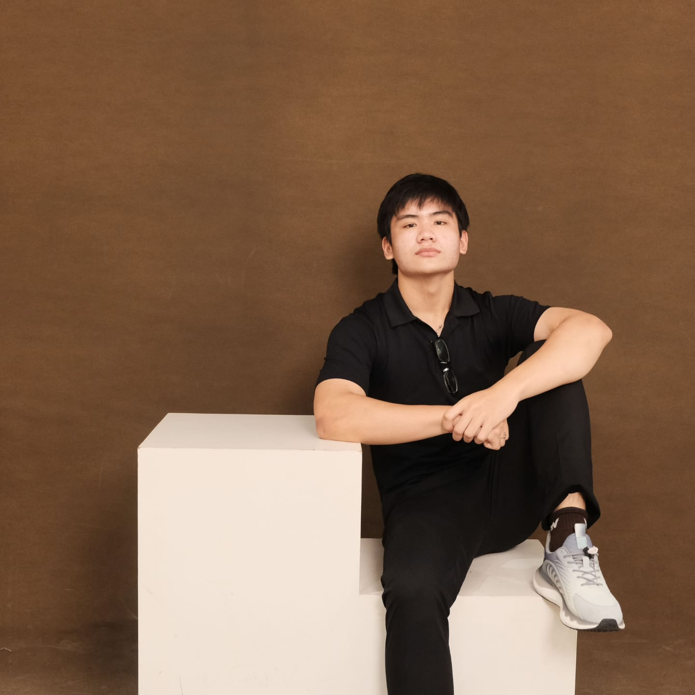
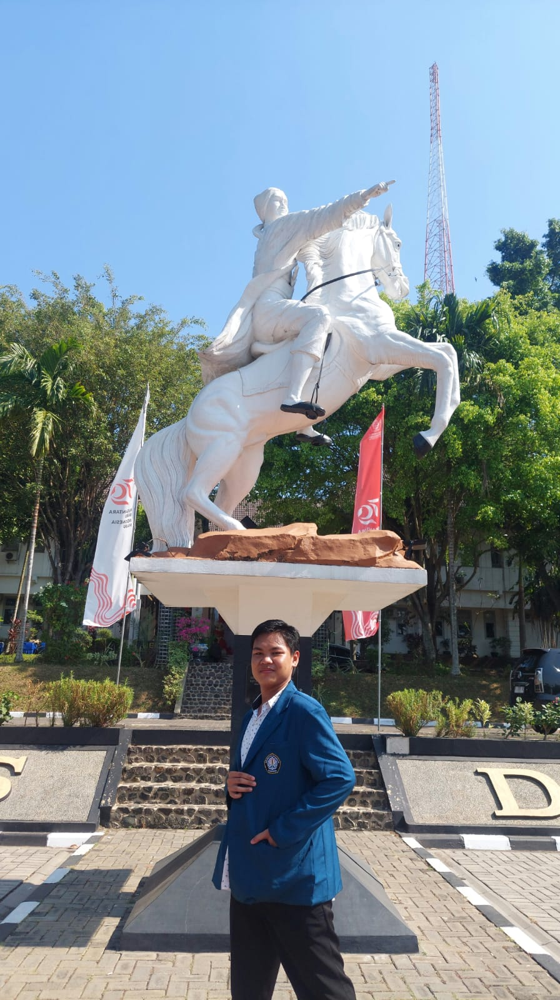
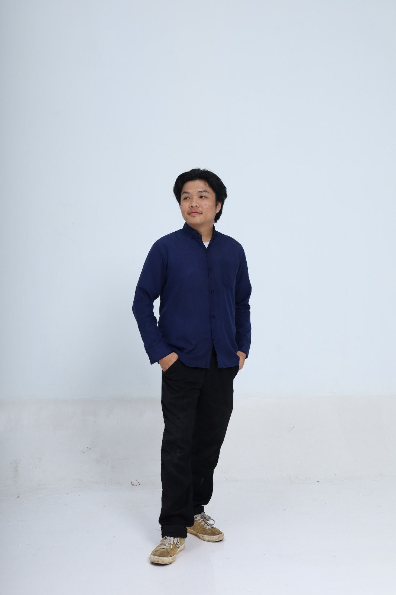

Latar Belakang & Tujuan
Permasalahan keterbatasan cadangan litium dan tingginya biaya produksi baterai konvensional menjadi tantangan besar dalam transisi energi berkelanjutan. Di sisi lain, Indonesia memiliki potensi biomassa yang melimpah, salah satunya adalah limbah kulit pisang kepok yang produksinya sangat tinggi namun belum dimanfaatkan secara optimal. Kulit pisang kepok diketahui memiliki kandungan selulosa hingga 17,04%. Potensi ini dapat dimanfaatkan sebagai prekursor ramah lingkungan dalam pengembangan komponen material fungsional penyimpanan energi.
Mengisolasi selulosa dengan tingkat kemurnian tinggi dari limbah kulit pisang kepok melalui metode Microwave-Assisted Extraction (MAE) yang efisien dan hemat energi. Selanjutnya, penelitian ini bertujuan untuk mengkarakterisasi sifat fisikokimianya serta mengevaluasi potensi pemanfaatannya sebagai material bio-karbon aktif untuk anode baterai natrium-ion (Na-Ion). Langkah ini diharapkan mampu menyediakan alternatif teknologi penyimpanan energi yang lebih murah, aman, dan berkelanjutan.
Penelitian ini merumuskan permasalahan mengenai bagaimana efektivitas isolasi selulosa berdaya kemurnian tinggi dari limbah kulit pisang kepok dengan menggunakan metode Microwave-Assisted Extraction (MAE). Selain itu, dikaji pula bagaimana karakteristik fisikokimia yang meliputi tingkat kemurnian, kristalinitas, serta morfologi dari selulosa yang berhasil diekstraksi tersebut. Lebih lanjut, dianalisis seberapa besar potensi selulosa hasil ekstraksi dari limbah kulit pisang kepok ini untuk diaplikasikan secara optimal sebagai material anode berkelanjutan pada teknologi baterai natrium-ion (sodium-ion battery).
Integrasi teknologi Microwave-Assisted Extraction (MAE) yang ramah lingkungan untuk mengekstrak selulosa murni (>85) secara cepat dari limbah kulit pisang kepok. Selulosa ini kemudian disintesis menjadi material bio-carbon berpori sebagai anode berperforma tinggi pada baterai natrium-ion. Inovasi ini menawarkan solusi pemanfaatan limbah biomassa lokal yang terintegrasi dengan pengembangan teknologi energi hijau berbasis ekonomi sirkular demi mendukung industri bebas karbon di masa depan.
Produk

Metodologi & Cara Kerja
Kulit pisang kepok dikumpulkan, dicuci bersih, kemudian dikeringkan menggunakan oven pada suhu $70^\circ\text{C}$. Sampel yang telah kering selanjutnya digiling menggunakan grinder hingga menjadi serbuk halus dan diayak menggunakan ayakan ukuran 100 mesh. Proses ini bertujuan untuk memperoleh ukuran partikel yang seragam dan homogen sebagai bahan baku optimal untuk tahap ekstraksi selulosa.
PREPARASISerbuk kulit pisang kepok dicampurkan dengan larutan asam klorida (HCl) 0,25%. Campuran tersebut kemudian dimasukkan ke dalam aparatus MAE dan diekstraksi menggunakan daya mikrowave 600 W pada suhu 80 °C selama 30 menit. Setelah proses ekstraksi selesai, campuran disaring di bawah kondisi vakum, lalu filtratnya dicampur dengan etanol selama 12 jam untuk mempresipitasi selulosa. Endapan selulosa yang terbentuk dicuci dan dikeringkan pada suhu 40°C hingga diperoleh bubuk selulosa murni.
EKSTRAKSIBubuk selulosa murni hasil ekstraksi dikarbonisasi di dalam furnace pada suhu 1000°C selama 2 jam dengan laju pemanasan 50°C di bawah atmosfer gas argon untuk menghasilkan bio-carbon berpori. Selanjutnya, slurry anode dibuat dengan mencampurkan bio-carbon, carbon black, dan pengikat CMC, lalu dilapisi pada foil aluminium. Untuk komponen pendukung, katode dibuat dari campuran MnO₂, separator berbasis selulosa dicetak dengan metode solution casting, dan larutan Na₂SO₄ disiapkan sebagai elektrolit sebelum seluruh komponen dirakit erat ke dalam casing baja.
FABRIKASISelulosa hasil ekstraksi dikarakterisasi menggunakan FTIR untuk konfirmasi gugus fungsi, XRD untuk analisis indeks kristalinitas, serta SEM-EDX untuk mengamati morfologi permukaan dan komposisi unsur. Selanjutnya, baterai natrium-ion yang telah dirakit melalui pengujian performa elektrokimia (charge-discharge) untuk mengetahui kapasitas spesifik dan stabilitas siklusnya. Selain itu, dilakukan pula uji durabilitas tegangan sel menggunakan voltmeter digital serta uji stabilitas termal pada variasi suhu 60 °C, 80°C, 100°C untuk mengevaluasi keamanan baterai.
PENGUJIANHasil & Kesimpulan
Berdasarkan hasil sintesis kajian literatur dan analisis komprehensif, metode Microwave-Assisted Extraction (MAE) terbukti sebagai metode yang efisien dan ramah lingkungan dalam mengisolasi selulosa dari limbah kulit pisang kepok dengan tingkat kemurnian mencapai lebih dari 85% dalam waktu yang relatif singkat. Karakterisasi menggunakan FTIR, XRD, dan SEM-EDX menunjukkan hilangnya puncak lignin, meningkatnya dominasi struktur kristalin dengan indeks kristalinitas mencapai 56,8%, serta terbentuknya morfologi permukaan yang sesuai untuk diaplikasikan sebagai komponen fungsional material baterai.
Hasil evaluasi elektrokimia menunjukkan bahwa selulosa hasil ekstraksi limbah kulit pisang kepok memiliki potensi tinggi sebagai material anoda pada baterai natrium-ion (sodium-ion battery). Penggunaan material ini mampu meningkatkan stabilitas siklus pengisian daya, efisiensi konversi energi, serta memberikan alternatif komponen baterai yang lebih ekonomis dan memiliki stabilitas termal hingga suhu 300°C.
Secara keseluruhan, inovasi konsep “From Waste to Watts” berhasil mengintegrasikan pengelolaan limbah biomassa lokal dengan pengembangan teknologi penyimpanan energi berkelanjutan. Inovasi ini berpotensi menjadi langkah strategis dalam mendukung percepatan transisi menuju kemandirian industri hijau dan bebas karbon di Indonesia.
Anggota Tim



